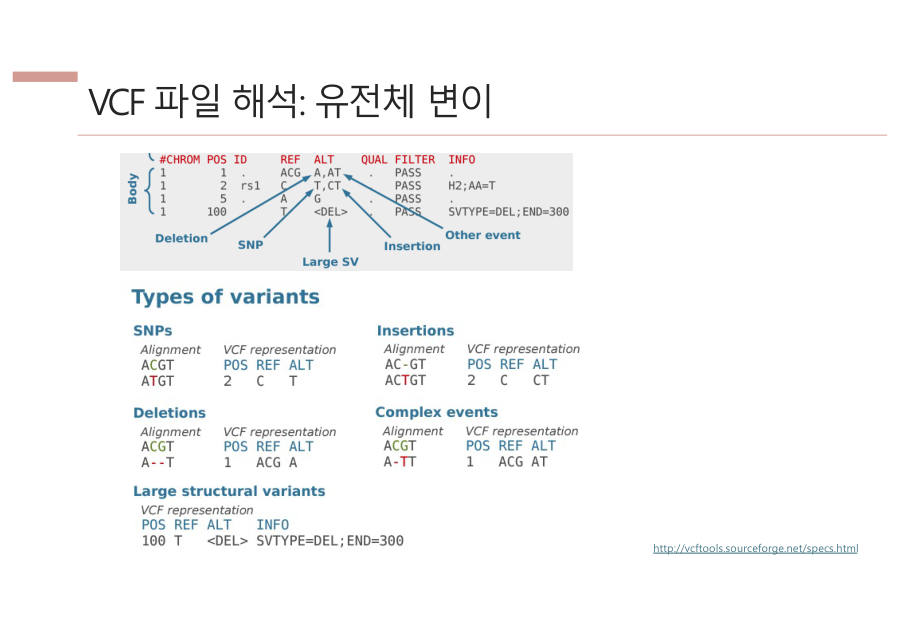

7장. 진짜 변이 골라내기
정렬이 끝난 BAM에서 가짜 차이를 걸러 내고 진짜 변이만 남기는 방법을 배워요. 순서는 중복 제거(MarkDuplicates), 점수 영점 맞추기(BQSR), 변이 호출(Variant calling), 결과 읽기(VCF)예요.
7-0. 먼저 큰 그림 — 왜 BAM을 또 다듬을까요?
앞 장에서 짧은 DNA 조각(read)들을 레퍼런스(정답지 유전체) 위에 맞춰 놓은 BAM 파일을 만들었어요. 이제 레퍼런스와 글자가 다른 곳을 찾으면 변이 후보가 나와요.
그런데 다른 곳이 전부 진짜 변이는 아니에요. 복사하다 생긴 중복, 기계의 점수 버릇, 우연한 읽기 실수가 섞여 있어요. 이 장은 그 가짜를 걸러 내는 장치들을 차례로 배워요.
틀린 그림 찾기에서 두 그림의 다른 곳을 찾는 건 쉬워요. 그런데 그 다른 곳이 원래 다른 건지, 인쇄 얼룩인지 모르면 소용이 없어요. 얼룩과 진짜 차이를 가려내는 게 진짜 어려운 일이에요.
교수님 핵심 문장 "틀린 그림 찾기는 쉽다. 그게 진짜 변이인지 계산하는 게 중요하다."
앞 장의 depth(한 위치를 여러 번 읽기), 이번 장의 MarkDuplicates·BQSR·HaplotypeCaller는 모두 에러와 진짜를 구별하려고 있는 장치예요.
| 순서 | 단계 | 무엇을 막아 주나요 |
|---|---|---|
| 1 | MarkDuplicates | PCR 복사본 때문에 변이 비율이 부풀려지는 것 |
| 2 | BQSR | 기계의 점수 버릇 때문에 실수를 변이로 착각하는 것 |
| 3 | Variant calling (HaplotypeCaller) | 에러를 진짜 변이로 착각하는 것 (확률 계산) |
| 4 | Hard filter | 점수가 기준에 못 미치는 변이가 결과에 남는 것 |
정렬된 BAM에서 레퍼런스와 다른 곳을 찾는 것은 쉽지만, 그중에는 PCR 중복과 시퀀싱 에러가 섞여 있다. 따라서 MarkDuplicates와 BQSR로 BAM을 다듬은 뒤 variant calling으로 진짜 변이일 확률을 계산해 확실한 것만 남긴다.
잠깐 확인 — 레퍼런스와 다른 글자를 찾으면 곧바로 변이라고 부르면 안 되는 이유는?
다른 글자 중에는 PCR 복사본, 기계 점수의 버릇, 읽기 실수 같은 가짜가 섞여 있기 때문이에요. 그래서 진짜일 확률을 계산해서 확실한 것만 골라야 해요.
7-1. MarkDuplicates — 복사본 빼기
시퀀싱을 하려는데 DNA가 모자랄 때가 있어요. 그러면 PCR(Polymerase Chain Reaction, DNA를 복사기처럼 불리는 기술)로 DNA를 늘려요. 이때 같은 조각의 복사본이 여러 개 생겨요.
PCR duplicate(PCR 중복)는 PCR 때문에 같은 DNA 조각이 복사되어 똑같이 여러 번 읽힌 read예요.
복사본은 어떻게 알아볼까요? DNA를 무작위로 잘랐다면 시작점과 끝점이 똑같은 조각이 우연히 여러 개 나올 리가 없어요. 그래서 시작 위치와 끝 위치가 같으면 복사본으로 보고 하나만 남겨요.
실제로는 염색체(Chr), 위치(Position), CIGAR(조각이 레퍼런스에 어떻게 맞는지 적은 암호)가 모두 같은지를 봐요. 이 세 가지가 같으면 PCR 중복이에요.
부정 투표 한 사람이 투표용지를 복사해서 여러 번 내면 결과가 왜곡돼요. 그래서 한 사람 한 표만 인정하는 거예요. 설문조사에서 한 사람이 같은 답을 열 번 낸 것을 한 표로 세는 것과 같아요.
왜 이게 중요할까요? 복사본이 많으면 변이 비율이 실제보다 크게 보이기 때문이에요. 숫자로 볼게요.
- 진짜는 조각 10개 중 변이 조각 3개, 그러니까 30%예요.
- 그런데 변이 조각 3개가 PCR로 28개까지 불어나면 28 ÷ (28+7) = 80%로 보여요.
- 그러면 병이 실제보다 훨씬 심한 "말기"로 오판할 수 있어요. 복사본을 지우면 약 30%라서 "중기 정도"로 바르게 판단해요.
생략해도 되는 경우까지 물어봐요. Amplicon(targeted) 데이터는 원하는 부위만 PCR로 뽑은 것이라서 원래 모든 조각의 시작과 끝이 같아요. 이때 MarkDuplicates를 하면 멀쩡한 read까지 다 지워지니 생략해요.
무작위로 자른 DNA(gDNA)에서만 해요. 정리하면 "목적에 따라 판단"이에요.
도구는 Picard예요. 끝나면 BAM을 위치 순서로 다시 정렬해요(SortSam). 다음 단계들이 위치순으로 정리된 BAM을 필요로 하기 때문이에요.
실습에서도 확인했어요. 정렬 직후 flagstat의 duplicates는 0이었는데 MarkDuplicates 뒤에는 1,542로 올랐어요. 전체 8,592,478개의 약 0.018%예요.

DNA가 부족하면 PCR로 증폭하는데 이때 같은 조각의 복제본(PCR duplicate)이 생긴다. 무작위로 자른 DNA는 시작점과 끝점이 우연히 같을 수 없으므로, 같은 위치에서 시작하고 끝나는 read는 중복으로 보고 Picard MarkDuplicates로 하나만 남긴다. 그대로 두면 변이 비율이 부풀려져(예 30%가 80%) 오판하며, 특정 부위를 PCR로 뽑은 amplicon 데이터는 원래 시작·끝이 같으므로 생략한다.
잠깐 확인 — amplicon 데이터에서는 MarkDuplicates를 왜 안 하나요?
원하는 부위만 PCR로 뽑았기 때문에 모든 조각의 시작과 끝이 원래 같아요. 그대로 하면 진짜 read까지 중복으로 지워 버려요.
7-2. BQSR — 기계 점수 영점 맞추기
시퀀서는 글자 하나하나에 "이 글자 얼마나 믿을 만해요?" 하는 품질 점수를 붙여요. 그런데 이 점수에는 버릇(bias)이 있어요. 어떤 때는 너무 후하고 어떤 때는 너무 짜요.
점수를 그대로 믿으면 기계가 실수한 글자를 진짜 변이로 착각해요. IGV에서 색칠된 글자가 진짜 변이인지 에러인지 모르는데 전부 SNP로 부르면, SNP가 엄청나게 많아져요.
BQSR(Base Quality Score Recalibration, 염기 품질 점수 재보정)은 시퀀서가 매긴 품질 점수의 버릇을 고쳐서 다시 매기는 과정이에요.
체중계 영점 맞추기 체중계가 늘 1kg 더 나오면 영점을 맞추죠. BQSR은 이미 알려진 진짜 변이 목록(dbSNP)을 참고해요. 교수님 표현으로는 "정답지를 살짝 본다"예요.
알려진 변이 자리에서 다른 글자가 나오면 진짜 변이일 수 있어요. 거기에 속하지 않은 불일치는 오류일 가능성이 더 높아서 "기계 실수"로 세어 보고, 점수가 실제보다 후한지 짠지 보정해요.
BQSR은 3단계로 진행돼요. 슬라이드 65쪽의 순서는 이래요.
- 참고 DB 내려받기 — dbSNP 같은 알려진 SNP 목록을 준비해요.
- BaseRecalibrator — 보정표(재보정 테이블)를 만들어요.
- ApplyBQSR — 그 표대로 BAM의 품질 점수를 다시 써요.
결과로 나오는 BAM을 분석 준비 완료 BAM(analysis-ready BAM, final BAM)이라고 해요. 슬라이드에서는 final.bam, 실습에서는 recal.bam이라고 부르는데 이름 관례일 뿐 같은 거예요.
시퀀싱 기기가 매긴 품질 점수에는 bias가 있어 NGS 에러를 진짜 변이로 오인할 수 있다. BQSR은 dbSNP 같은 알려진 SNP 위치를 참고해 BaseRecalibrator로 재보정 테이블을 만들고, ApplyBQSR로 BAM의 품질 점수를 다시 써서 분석 준비가 끝난 final BAM을 만든다.
잠깐 확인 — BaseRecalibrator와 ApplyBQSR는 각각 무엇을 하나요?
BaseRecalibrator는 보정표(테이블)를 만들고, ApplyBQSR는 그 표를 BAM에 적용해 점수를 다시 써요. 표를 먼저 만들고 그다음 적용하는 순서예요.
7-3. Variant calling — 진짜 오타만 골라내기
드디어 이 장의 중심이에요. 레퍼런스와 다른 곳을 변이라고 가정해 놓고, 그것이 진짜일 가능성이 얼마인지 계산해요.
Variant calling(변이 호출)은 내 서열을 레퍼런스와 비교해 다른 곳을 일단 변이라고 가정하고, 여러 방법으로 진짜 변이일 확률을 계산해서 확실한 것만 뽑아내는 과정이에요.
일기예보는 "비 올 확률 80%"처럼 가능성을 계산해서 말해요. Variant calling도 "이 글자가 진짜 변이일 확률 99%"처럼 계산해서 높은 것만 변이로 인정해요.
왜 확률일까요? 읽은 결과가 100% 맞는다고 장담할 수 없기 때문이에요. 100번 읽었는데 한 번만 다르면 에러로 볼 수 있지만, 2번 읽었는데 한 번 다르면 판단할 수 없어요. 그래서 5장에서 본 depth가 중요해요.
변이를 부르는 도구는 GATK예요. GATK는 Genome Analysis Toolkit의 약자이고, Broad Institute(하버드와 MIT가 함께 만든 연구소)가 만들었어요. 그 안의 HaplotypeCaller가 실제로 변이를 불러요.
GATK는 연습용 자료 묶음(GATK bundle)도 무료로 줘요. 레퍼런스 게놈, 변이 DB(dbSNP·1000 Genomes·ExAC), 기능 annotation(GENCODE 등), BQSR 같은 도구 전용 자료의 네 가지예요.
Variant calling은 시퀀싱 결과를 레퍼런스와 비교해 다른 곳을 일단 변이로 가정하고, 실제 변이일 확률을 계산해 확실한 것만 뽑는 과정이다. 대표 도구는 Broad Institute가 만든 GATK(Genome Analysis Toolkit)의 HaplotypeCaller이다.
잠깐 확인 — GATK의 풀네임과 만든 기관은?
Genome Analysis Toolkit이고, Broad Institute(하버드와 MIT)가 만들었어요. 단답형으로 자주 나와요.
7-4. HaplotypeCaller는 어떻게 판단하나
HaplotypeCaller의 핵심 아이디어는 변이를 하나씩 따로 보지 않고 여러 개를 묶음으로 본다는 거예요. 그 묶음의 이름이 haplotype이에요.
Haplotype(하플로타입)은 한 염색체 위에서 같이 붙어서 유전되는 변이들의 묶음이에요.
세트 메뉴를 떠올려 보세요. 햄버거만 따로 오는 게 아니라 햄버거+감자튀김+콜라가 한 세트로 와요. 엄마가 준 염색체에는 A-C-G 세트가, 아빠가 준 염색체에는 G-T-G 세트가 들어 있는 식이에요.
세트라서 첫 번째가 A면 두 번째는 거의 C, 세 번째는 거의 G예요. 이 규칙을 이용하면 가짜를 찾을 수 있어요. 아래 그림을 볼게요.
| 엄마 쪽 | A | · | · | C | · | · | G |
| 아빠 쪽 | G | · | · | T | · | · | G |
| 조각 a | A | · | · | C | |||
| 조각 b | T | · | · | G | |||
| 조각 c | A | · | · | T |
조각 a는 엄마 세트(A···C)와 딱 맞고, 조각 b는 아빠 세트(T···G)와 딱 맞아요. 그래서 진짜예요. 조각 c는 "A 다음에 T"인데 어느 세트에도 없어요. 그래서 에러일 가능성이 높아요.
이제 HaplotypeCaller가 일하는 순서를 볼게요.
- Active region 정하기 — 다른 글자가 몰려 있는 동네만 골라서 집중해요. 전부 보기엔 너무 많아서예요. 나머지는 NGS 에러로 보고 넘어가요.
- Haplotype 후보 만들기 — 그 동네에서 가능한 세트들을 만들어요.
- PairHMM으로 점수 매기기 — "이 조각이 이 세트에서 나왔을 확률"을 계산해요. HMM은 Hidden Markov Model의 약자이고, 에러와 삽입·결실까지 고려하는 채점기라고 생각하면 돼요.
- 베이지안 모델로 정리하기 — 확률을 갱신해서 확률이 높은 변이만 변이로 불러요.
베이지안은 "증거가 쌓일수록 믿음이 바뀐다"는 생각이에요. 아침에는 비가 올지 반반이라고 생각해요. 하늘이 흐리면 더 믿게 되고, 우산 든 사람이 많이 보이면 거의 확신하게 돼요.
처음 추측이 사전 확률이고, 증거를 보고 고친 믿음이 사후 확률이에요. 교수님 설명으로는 PairHMM이 계산한 값이 사전 확률이고, 베이지안 모델이 이것을 반복(iteration)해서 고쳐 사후 확률을 올려요. 그래서 확실한 것만 남아요.
HaplotypeCaller를 실행할 때 알아 둘 옵션은 두 개뿐이에요.
-L— 분석할 영역을 정해요. 병원의 암 진단은 알려진 위치만 보면 되니까 영역을 좁혀서 빨리 끝내요. 안 정하면 모든 영역에서 새로운(de novo) 변이를 찾느라 오래 걸려요.-ploidy 2— 사람은 이배체(diploid)라는 뜻이에요. 염색체가 엄마 한 벌, 아빠 한 벌로 두 벌이어서 2예요.
코드는 읽을 수만 있으면 돼요. 교수님이 "코드는 심플하고 개념만 알면 된다"고 했어요. 옵션 중 --standard-min-confidence-threshold-for-calling 30은 확신 점수 30 이상일 때만 변이로 부르라는 뜻이라는 정도만 알면 충분해요.
HaplotypeCaller는 변이가 몰린 active region을 정한 뒤, 한 염색체에서 함께 유전되는 변이 조합인 haplotype을 기준으로 PairHMM이 read가 각 haplotype에서 나왔을 확률을 계산한다. 이를 베이지안 모델로 갱신해 haplotype 패턴과 맞는 변이는 진짜로, 맞지 않는 것은 에러로 판단하여 확률이 높은 변이만 호출한다.
잠깐 확인 — 조각 c(A 다음에 T)는 왜 에러일 가능성이 높나요?
엄마 세트(A-C-G)에도 아빠 세트(G-T-G)에도 "A 다음에 T"는 없기 때문이에요. 변이는 세트로 같이 다니므로 어느 세트와도 안 맞는 조각은 에러로 봐요.
7-5. GVCF vs VCF
HaplotypeCaller의 결과 파일은 두 가지 모양이 있어요. 교수님은 처음부터 VCF를 만들어도 되지만 GVCF를 먼저 만들고 거기서 VCF를 추리는 방식을 권했어요. GVCF를 갖고 있으면 나중에 다시 추적할 때 쓸모가 있기 때문이에요.
출석부 GVCF는 반 전체의 출석부예요. 출석, 결석, 그리고 "잘 모르겠음(?)" 칸까지 다 적어요. VCF는 결석자(변이) 명단만 적은 종이예요.
| GVCF (Genomic VCF) | VCF (Variant Call Format) | |
|---|---|---|
| 적는 것 | 모든 위치. 판단 못 한 곳은 <NON_REF> | 확실한 변이만 |
| 순서 | 먼저 만듦 | GVCF에서 GenotypeGVCFs로 추림 |
<NON_REF>는 coverage가 낮거나 read 품질이 낮아서 변이인지 아닌지 판단할 수 없다는 표시예요. GVCF에서는 한 줄이 END 값까지의 구간을 묶어서 적어요.
실습 순서도 같아요. 먼저 HaplotypeCaller를 -ERC GVCF로 돌려 GVCF를 만들고, 다음에 GenotypeGVCFs로 최종 genotype(GT)을 붙여 VCF를 만들어요. -ERC는 변이가 아닌 위치를 어떻게 다룰지 정하는 옵션이에요.
하나 더 있어요. 변이만 출력하는 --output-mode EMIT_VARIANTS_ONLY는 VCF에서만 쓸 수 있어요. 모르는 위치까지 다 내는 GVCF에서는 쓸 수 없어요.

GVCF(Genomic VCF)는 변이 여부를 판단할 수 없는 위치(coverage·품질 부족, <NON_REF>)까지 전체 위치를 기록하고, VCF(Variant Call Format)는 확실한 변이만 기록한다. 보통 GVCF를 먼저 만든 뒤 GenotypeGVCFs로 VCF를 추리며, GVCF는 나중에 다시 추적할 때 유용하다.
잠깐 확인 — 출석부 비유에서 GVCF와 VCF는 각각 무엇인가요?
GVCF는 모르는 칸까지 다 적은 전체 출석부, VCF는 결석자(확실한 변이)만 적은 명단이에요.
7-6. VCF 읽는 법 (1) — REF와 ALT로 변이 종류 맞히기
VCF는 표처럼 생긴 텍스트 파일이에요. 한 줄이 변이 하나이고, 칸마다 의미가 달라요. 처음 칸들은 이렇게 읽어요.
- CHROM 염색체, POS 위치, ID 변이 이름(없으면 점)
- REF 정답지(레퍼런스)의 글자, ALT 내 글자(alteration, 바뀐 글자)
- QUAL 변이 확신 점수, FILTER 필터 통과 결과, INFO·FORMAT 부가 정보
REF와 ALT를 나란히 놓고 비교하면 변이 종류를 알 수 있어요. 방법은 아주 간단해요.
| REF와 ALT를 비교하면 | 변이 종류 | 예 |
|---|---|---|
| 길이가 같고 한 글자만 다름 | SNP(글자 하나 바뀜) | C → T |
| ALT가 REF보다 짧음 | Deletion(결실, 빠짐) | ACG → A (뒤의 CG가 빠짐) |
| ALT가 REF보다 긺 | Insertion(삽입, 끼어듦) | C → CT (T가 끼어듦) |
여러 형태가 섞이면 complex event라고 해요. <DEL> 같은 기호가 적혀 있으면 큰 구간이 달라진 large structural variation(큰 구조 변이)이에요.
SNP와 SNV 구분 SNP(Single Nucleotide Polymorphism)의 polymorphism은 poly(많은)+morph(형태)라서 "염기 하나에 따라 형태가 여럿"이라는 뜻이에요. 머리색이나 눈동자색처럼 겉으로 드러나는 차이와 이어지는 변이예요.
SNV(Single Nucleotide Variation)는 겉으로 안 드러나도 레퍼런스와 다르기만 하면 부르는 더 넓은 말이에요.

VCF의 REF는 레퍼런스 염기, ALT는 샘플의 염기이며 둘을 비교하면 변이 종류를 알 수 있다. 길이가 같고 한 염기만 다르면 SNP(C→T), ALT가 짧으면 deletion(ACG→A), ALT가 길면 insertion(C→CT)이다.
잠깐 확인 — REF가 ACG이고 ALT가 A이면 어떤 변이인가요?
Deletion(결실)이에요. ALT가 REF보다 짧고, 뒤의 CG가 빠졌어요.
7-7. VCF 읽는 법 (2) — FILTER와 GT·DP·GQ·AD
먼저 FILTER 칸이에요. 점수가 기준에 못 미치는 변이를 버리는 방법을 hard filter(하드 필터)라고 해요. 기준을 통과하면 FILTER에 PASS가 적히고, 못 통과하면 걸린 필터 이름이 적혀요.
합격 커트라인이에요. 점수가 커트라인을 넘으면 PASS이고, 못 넘으면 "불합격 사유"가 찍혀요.
실습에서 쓴 GATK 권장 기준은 QD 2.0 미만, FS 60 초과, MQ 40 미만, MQRankSum -12.5 미만, ReadPosRankSum -8 미만, SOR 3 초과를 제거하는 거예요. 외울 것은 "QD 2.0 미만 제거"와 "PASS의 뜻" 정도예요.
- QD 변이 점수(QUAL)를 depth로 나눠 보정한 값이에요.
- FS, SOR 변이가 정방향(forward) 또는 역방향(reverse) read 한쪽에만 몰렸는지(strand bias) 보는 값이에요.
- MQ 매핑 품질의 요약이에요. 실습 화면에서 MQ가 60인 변이는 통과, 21인 변이는 MQ_filter가 걸렸어요.
하지만 희귀 변이를 찾을 때는 일부러 필터를 안 쓰기도 해요. 진짜 희귀 변이가 점수가 낮다는 이유로 버려질 수 있기 때문이에요. 그래서 시험에서는 "목적에 따라"가 정답이에요.
다음은 GT(Genotype, 유전자형)예요. 0은 정답지(REF) 글자이고 1은 바뀐 글자(ALT)예요. 사람은 엄마 염색체와 아빠 염색체 한 개씩이라서 숫자를 두 개 써요.
| GT | 뜻 | 변이가 있나요 |
|---|---|---|
| 0/0 | 두 염색체 모두 정답지와 같음 | 없음 |
| 0/1 | 한쪽만 바뀜 (이형접합) | 있음 |
| 1/1 | 양쪽 모두 바뀜 (동형접합) | 있음 |
GT에서 이어지는 숫자들도 있어요. AN은 전체 allele(염색체 한 개가 가진 글자) 수인데 사람은 보통 2예요. AC는 ALT allele 개수이고 AF는 ALT 빈도(AC ÷ AN)예요.
- 1/1이면 AC=2, AF=1.00이에요.
- 0/1이면 AC=1, AF=0.5예요.
나머지 세 가지는 이렇게 읽어요. DP는 depth, 그러니까 그 위치를 덮은 read 수예요. GQ는 유전자형을 얼마나 확신하는지를 Phred 점수로 나타낸 값이에요. AD는 글자별로 몇 개의 조각이 있는지예요.
한 위치를 20번 읽었고(DP=20), 정답지 글자가 10번, 바뀐 글자가 10번 나왔다면(AD=10,10) 반반이라 0/1이 자연스러워요. 교수님은 depth가 높아야 정확도가 올라간다는 것이 핵심 메시지라고 했어요.

GT는 "0은 정답지, 1은 바뀐 글자". 0/0은 없음, 0/1과 1/1은 있음. 이것만 확실하면 돼요. DP는 depth, GQ는 확신도(Genotype Quality), AD는 글자별 조각 수예요.
VCF의 GT는 0이 레퍼런스, 1이 ALT 염기를 뜻하며 0/0은 변이 없음, 0/1과 1/1은 변이 있음이다. DP는 depth, GQ는 genotype quality(Phred 점수), AD는 염기별 read 수이고, FILTER가 PASS이면 hard filter 기준(예 QD 2.0 이상)을 통과한 것이다.
잠깐 확인 — GT가 0/1이면 어떤 상태인가요?
엄마·아빠 염색체 중 한쪽만 바뀐 변이 있음 상태예요. AC는 1, AF는 0.5가 돼요.
- 틀린 그림 찾기는 쉽고 진짜 변이인지 계산하는 게 중요해요. 그래서 MarkDuplicates(PCR 복사본 제거, amplicon은 생략)와 BQSR(알려진 SNP를 참고해 품질 점수 영점 맞추기)로 BAM을 먼저 다듬어요.
- GATK(Genome Analysis Toolkit, Broad Institute)의 HaplotypeCaller는 active region과 haplotype 묶음, PairHMM, 베이지안 모델로 진짜 변이일 확률이 높은 것만 불러요. 결과는 GVCF(전체 위치)를 먼저 만들고 GenotypeGVCFs로 VCF(확실한 변이만)를 추려요.
- VCF는 REF/ALT로 SNP·삽입·결실을 읽고, FILTER PASS는 기준 통과, GT 0/0은 변이 없음, 0/1·1/1은 변이 있음, DP·GQ·AD는 depth·확신도·글자별 조각 수예요.